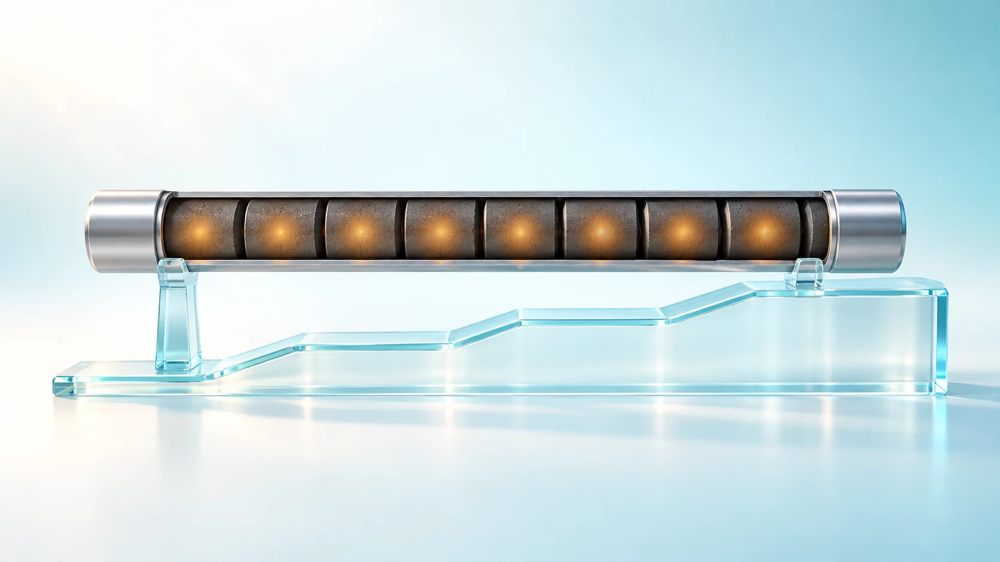
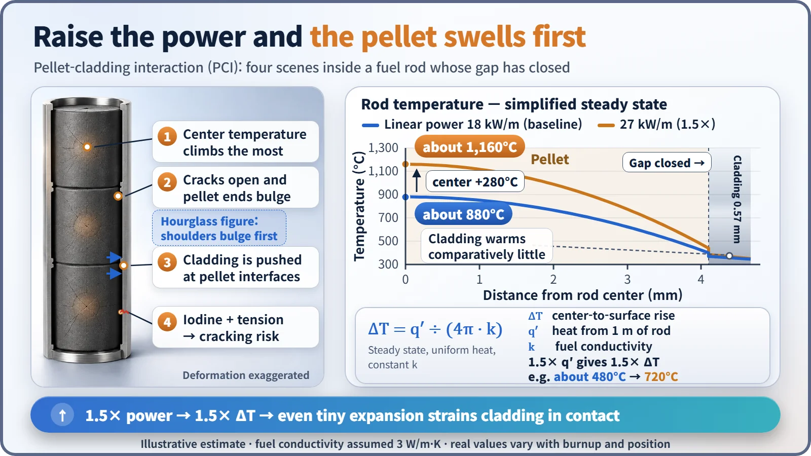
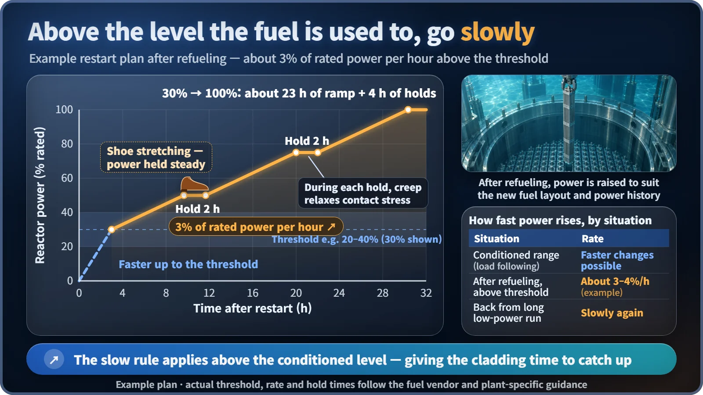

Plant Operation, Control & the Grid · 241
Break In Your New Shoes First — Why Nuclear Plants Limit Their Power Ramp Rate
The reactor could change power far faster. The slow climb gives a 0.57 mm metal tube time to stretch around swelling fuel pellets.

After refueling, a nuclear plant raises power above a threshold by only about 3 to 4% of rated power per hour, even though the reactor itself could change power far faster. The limit protects the fuel cladding, the first barrier, from pellet-cladding interaction: pellets that swell with heat push on a thin metal tube that needs time to stretch. [1]
Break in your new shoes first
"Don't wear new shoes all day on the first day. Start with short walks and break them in." Plenty of us have ignored that advice, spent a whole day in stiff new shoes, and come home with blisters. The leather never had time to stretch to the shape of the foot.
A nuclear power plant follows almost exactly the same rule. After new fuel is loaded and the plant is restarted, operators raise power fairly quickly up to a certain level, but above that they climb by only 3 to 4% of rated power per hour. Going from 30% to 100% takes the better part of a day. Let's look at the reason behind this patience, the power ramp rate limit, through the eyes of the fuel.
The culprit: a metal tube 0.57 mm thick
The power ramp rate is how fast reactor power is raised per hour, and a power ramp rate limit is the rule that caps it.
A fuel rod is a long, thin metal tube stacked with ceramic pellets about 8 mm across, each pellet a small piece of baked uranium oxide. The tube is the cladding, and its wall is only about 0.57 mm thick. Yet it is the first barrier that keeps radioactive material locked in, so it must not crack.
At first there is a gap about as wide as a hair between the pellets and the cladding. As the fuel is used, the pellets swell slightly while the high pressure of the surrounding water squeezes the cladding inward. The details depend on the design and operating history, but the gap usually closes within the first one to two years. Now foot and shoe are pressed tightly together. [3]
Four scenes inside the rod when power goes up
First, the pellet center gets much hotter. Ceramic conducts heat poorly, so even in normal operation the center is several hundred degrees Celsius hotter than the surface. As a relation: center-to-surface temperature difference = linear power ÷ (4π × thermal conductivity), where linear power is the heat produced by one meter of fuel rod. Raise power by 1.5 times and the temperature difference also grows 1.5 times (in this simplified calculation).
Second, the hotter pellet expands. Pellets are already crisscrossed with fine cracks, and as the hot middle expands more, the pellet ends bulge outward into an hourglass shape. The growth is only about a tenth of a hair's width, but for cladding already pressed against the pellet, that is a heavy load.
Third, the cladding can't keep up. It touches the cooling water outside, so it heats up less, and its metal expands less with heat than the ceramic does. The pellet pushes the cladding from inside, with the force concentrated where one pellet meets the next.
Fourth, iodine joins in. Iodine produced by fission escapes from the pellet during a power increase and attacks the inner surface of the cladding, and metal under tension is far more vulnerable to this corrosion. A crack produced by stress and corrosion together is called stress corrosion cracking. Not every power increase causes a crack; it becomes dangerous only when stress, the amount of iodine and time all cross their thresholds. The whole chain is called pellet-cladding interaction (PCI). [4] [5]

Give the shoe time to stretch
Fortunately, cladding has something in common with shoe leather. If the reactor stays at one power level for a while, creep, the very slow deformation of hot metal, lets the cladding stretch to the shape of the pellets and releases the built-up stress. The fuel is then said to be broken in at that power, or in technical terms, conditioned.
The problem is speed. Creep works on a timescale of hours, while iodine and stress together can open a crack in less time than that. In test reactors where fuel rods were deliberately ramped up fast, cladding has failed only ten-some minutes after reaching the target power. Climbing to the same height slowly lets creep relieve the stress as it builds, so the speed of the climb decides the outcome.
So the rule is built like this: below the level the fuel is conditioned to, power can move fairly freely, but above that level it is raised slowly, with holds along the way. After refueling, fresh fuel comes in and used fuel moves to new positions, so the power history changes. For example, power is raised to a threshold of 20 to 40% of rated power, then climbs by 3 to 4 percentage points per hour with several holds until it reaches 100%. Climbing 70 points from 30% to 100% at 3 points per hour takes a little over 23 hours; with the holds, a full day. Operators take the same care when raising power after a long period of low-power operation. [1]

A US training manual for pressurized water reactors states that the turbine loading rate is set by "the most limiting of" the turbine loading limit curve, the fuel pre-conditioning requirements and the load dispatcher's request. The fuel has its own seat at the table. [2]
Three things that are easy to mix up
Not every power change is held to 3% per hour. As with load following, power can be changed minute by minute within a range the fuel is already conditioned to. The slow rule mainly applies above the level the fuel has adapted to.
This is not the vessel heat-up limit. The limit on heating and cooling the thick steel reactor vessel and piping is a separate rule.
A crack does not mean a major accident. It is a fuel defect in which a small amount of radioactive gas leaks through a tiny opening, detected by monitoring the coolant. Still, the cladding is the first barrier, so the principle is not to create defects at all. That is why fuel less constrained by these limits keeps being developed, for example cladding with a layer of pure zirconium lining its inner surface.
As a bonus: when power rises, the amount of xenon, which soaks up neutrons, swings over several hours, and the power distribution between the top and bottom of the core can wobble. Operators settle it with boron and control rods, one more reason a slow climb is easier. [2]
Not slow, but adapting
A nuclear plant raises power slowly not because the nuclear reaction is sluggish. It is giving a metal tube 0.57 mm thick time to fit itself around fuel that swells inside it, just as you would break in new shoes with a walk around the block. The power ramp rate limit is the quietest safety measure guarding the first barrier.